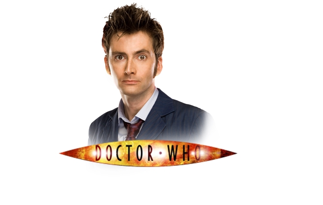
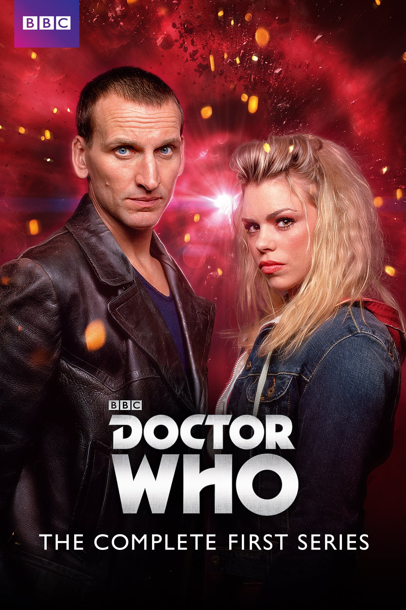
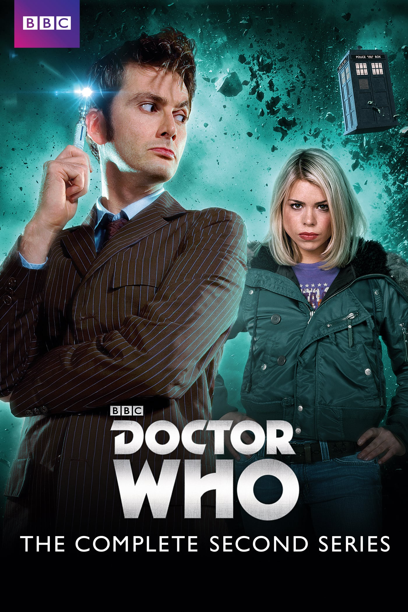
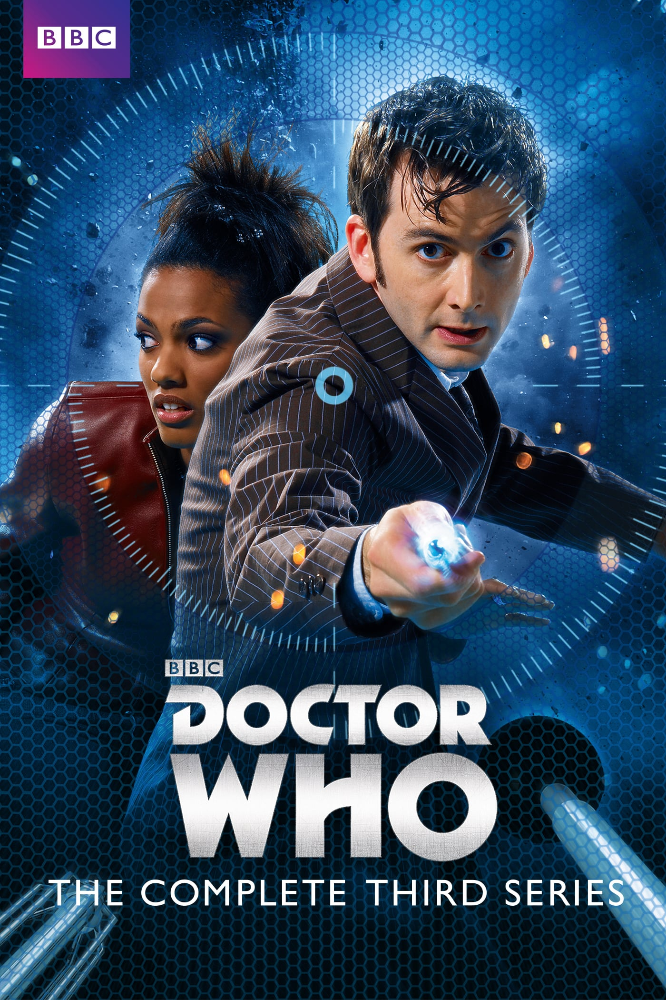
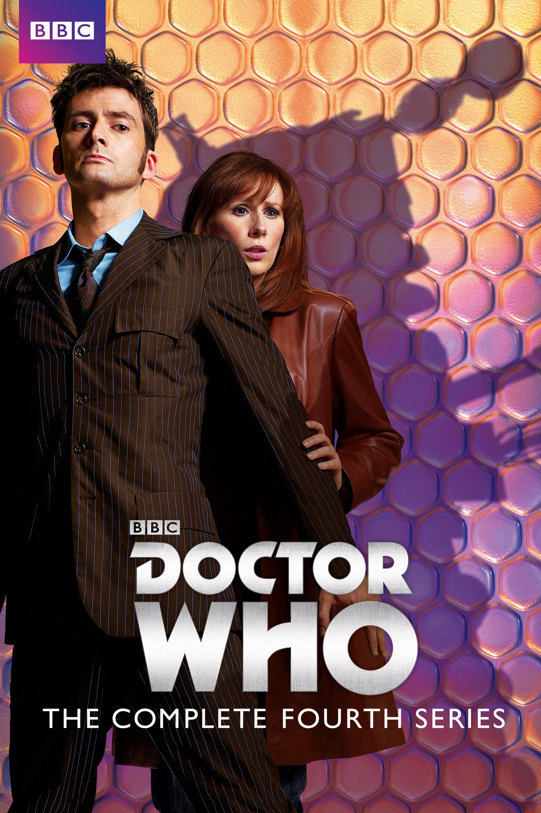

10º Doutor

Um Doctor extremamente sagaz, carismático, na maioria das vezes alegre e engraçado, e na minoria das vezes escuro e sério, e por certas vezes exagerado, cheio de equipamentos e coisas malucas. Ele era uma figura ainda abalada pela Time War (Guerra Temporal). Quando impulsionado por raiva ou justiça, agia sem hesitação, fazendo tudo o que julgava necessário, de forma até inconsequente. Como apontou uma de suas companheiras, Donna Noble, ele precisava de alguém ao seu lado para que não se deixasse levar por esses impulsos. Sua relação com suas companheiras chegou a ter muito apegado ápices românticos, exemplo à sua companheira Rose Tyler, cuja perda causou-lhe dor o bastante para ignorar a veneração de Martha Jones por ele. Regenerou também para salvar outrem, logo após impedir os planos do Alto Conselho de Gallifrey de destruir o tempo. Doctor favorito de muitos. Allons-y!
O 10º Doctor, interpretado por David Tennant, teve 3 Temporadas com um total de 36 arcos exibidos entre 2005 a 2010, totalizando 47 episódios de 45 minutos.
Companheiros: Rose Tyler, Mickey Smith, Donna Noble, Martha Jones, Capitão Jack Harkness, Astrid Peth, Sarah Jane Smith, Jackson Lake, Lady Christina de Souza Adelaide Brooke, Wilfred Mott
David Tennant teve uma participação no especial de 50 anos da série de TV. The Day of the Doctor (O Dia do Doutor) na 7ª temporada da Série Nova.
Os posts com informações e curiosidades dos arcos do 10º Doctor, portanto iremos disponibilizá-los aos poucos. Porém, você pode assistir a toda era do 10º Doctor online e legendada abaixo.
Está disponível no site a função torrent, com cada temporada completa, mas o site não recebe vários tipos de arquivos, só recebe documento docx. Você tem que entrar no arquivo e copiar o link magnet., depois vai no aplicativo BitTorrent ou uTorrent, e aperte no ícone: adicionar torrent da URL. Aí cola o link magnet. e aperta OK, que já vai começar a abaixar.
Em Breve Links Ativado
SÉRIE
27ª TEMPORADA - PARTE 2

28ª TEMPORADA

29ª TEMPORADA

30ª TEMPORADA

Artigo Escrito por Dhannyllo Souza